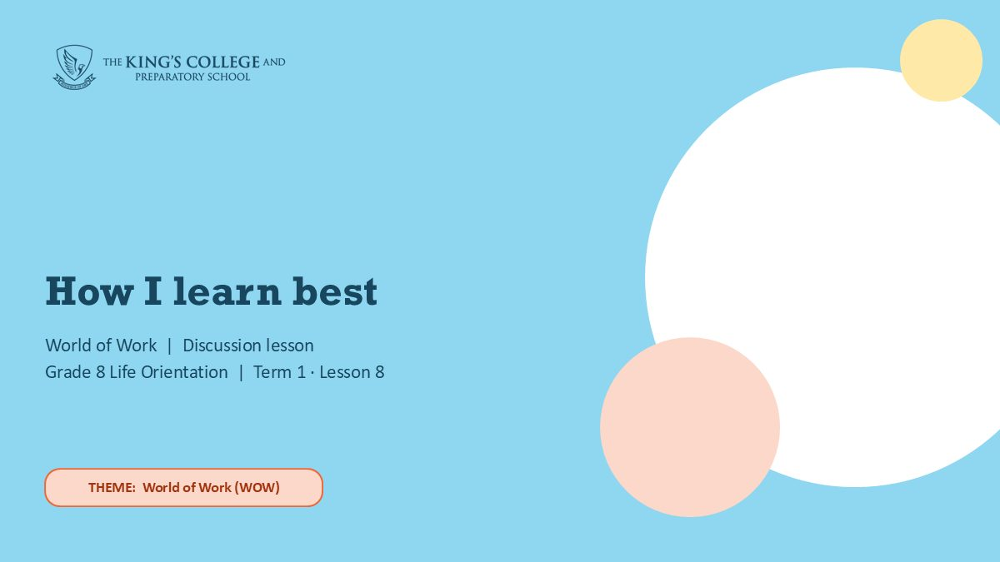

Term 1 · Lesson 8 · Discussion lesson
How I learn best
Start here
Today I will
- Name the four VARK learning styles
- Find out which style suits me best
- Choose study methods that fit my style
Today you do a self-check quiz: How Do I Learn Best? Do the quiz →
Think of something you learnt really well (a song, a sport, a recipe). HOW did you learn it?
Words to Know
| Word | Meaning |
|---|---|
| Learning style | The way you find it easiest to take in and remember information. |
| Visual | Learning best from pictures, diagrams, colours and mind maps. |
| Aural | Learning best by listening and talking things through. |
| Read/write | Learning best from reading and writing notes and lists. |
| Kinaesthetic | Learning best by doing, moving and hands-on practice. |
| Active recall | Testing yourself from memory instead of just re-reading. |
Slides

Videos
Notes
Everyone can learn. Knowing HOW you learn best helps you study in a way that works for you, so that your study time leads to better results.
What is a learning style?
A learning style is the way you find it easiest to take in, understand and remember information. The VARK model describes four learning styles:
| Style | Learns best by… | Study methods that suit it |
|---|---|---|
| Visual | Seeing pictures, diagrams, colours and patterns | Mind maps, colour-coding, diagrams, timelines, picture flash cards |
| Aural | Listening and talking | Explaining work out loud, recording yourself, discussing with a study partner |
| Read/write | Reading and writing words | Summaries, lists, rewriting notes in your own words, practice answers |
| Kinaesthetic | Doing, moving and hands-on practice | Walking while revising, models, role-play, real-life examples, moving flash cards |
Most people are multimodal
Most people do not use only one style. They are multimodal, which means they learn best with a mix of styles. Using two or three styles together (for example, drawing a mind map AND explaining it out loud) usually works better than using one.
Study smarter, not longer
- Active recall: close your book and write or say everything you remember, then check. This works better than re-reading, which only makes work look familiar.
- Spacing: short sessions over several days work better than one long session the night before.
- Questions: turn headings into questions and answer them.
- These methods work for every learning style.
Benefits of knowing your learning style
- You remember more in less time.
- You feel more confident and less stressed before tests.
- You understand why some subjects or methods feel easier than others, and can adapt.
How memory works (in simple terms)
When you learn something new, it first goes into your short-term memory, which only holds a little information for a short time. To remember it for a test, it must move into your long-term memory. This happens when you use the information again and again, especially by recalling it from memory, explaining it, or using it in different ways. That is why reading notes once is not enough, and why active recall and spacing work so well.
Study methods that work for everyone
- Active recall: cover your notes and write or say what you remember, then check.
- Spaced practice: revise a topic several times over days, not once.
- Teach it: explain the work to a friend or family member.
- Practice questions: answer past exam-style questions and mark them with a memo.
- Mix it up: use more than one learning style for the same work.
Case study: Three friends, three styles
Mia remembers best when she draws colourful mind maps (visual). Aarav likes to rewrite his notes into neat lists and summaries (read/write). Thabo can't sit still for long. He studies by walking around his room while saying facts out loud, and by acting things out (kinaesthetic and aural). Before the LO test they studied together: Mia drew the mind map, Aarav wrote the summary, and Thabo quizzed them out loud. All three did better than when they studied alone.
Questions to think about: Which learning style does each friend prefer? Why did studying together help? Which methods would suit you?
A word of caution
Knowing your learning style is useful, but don't use it as an excuse ('I can't learn from reading because I'm visual'). Everyone can learn in every way; your style just shows what feels easiest. The best learners use a mix of methods and, above all, test themselves.
Worked exam answer
Question: Suggest ONE study method for a kinaesthetic learner and explain how it helps. (1 x 2) (2)
Answer: Walk around while reciting key facts ✓, because movement helps a kinaesthetic learner stay focused and remember the information ✓.
Know the four VARK styles with one study method for each, and be able to recommend study methods for a learner in a scenario (method + how it works + how it helps).
Know how you learn best, then test yourself instead of just re-reading.
In class: Find my style
- Do the 'How do I learn best?' quiz on the website (learnwithangela.co.za > Grade 8 > Lesson 8 > Do the quiz), about 8 minutes.
- Write your top one or two styles in your book.
- List three study methods that suit your style.
- Tell a partner how you will study for your next test.
- This becomes the start of your Term 2 presentation.
Do the quiz here on the website. It takes about 5 to 8 minutes and shows your result straight away. Nothing you tick is saved or sent.
Do the quiz →Test yourself
- What does the K in VARK stand for?
- Give one study method for a visual learner.
- What is active recall?
Show answers
1. Kinaesthetic (learning by doing). 2. Mind maps, diagrams, colour-coding, picture flash cards. 3. Testing yourself from memory instead of re-reading.
Finished early?
Use two study methods at once: a mind map and active recall.
- In your LO book, draw a mind map with 'VARK' in the middle and the four learning styles around it.
- Add one study method for each style, using colour or small pictures.
- Close your book and write down everything you remember on a clean page.
- Open the book, check, and add what you missed in a different colour.